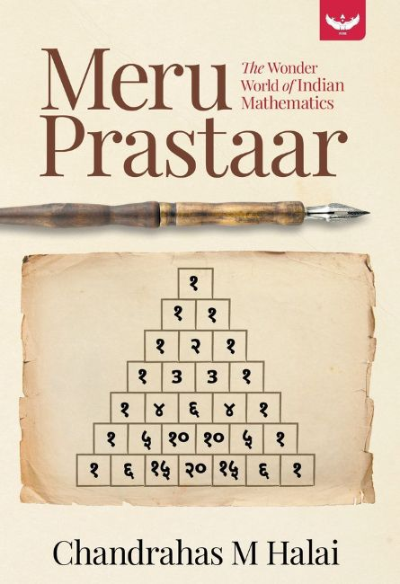

Indian Knowledge Systems | Bharatiya ganita imagination
Pingala Prism: where Sanskrit chandas becomes digital logic.
Explore how Pingala transformed poetic rhythm into a system of pattern, combination, and binary-style thought. This yatra connects shloka, gaṇa, Meru Prastara, and modern computing in one immersive interface.
Acharya Pingala
A poet-scientist of pattern and rhythm
Pingala, linked with the Chanda Shastra, studied how syllables create structured rhythm. His work turned kavya patterns into a logical system.
Samasya
How do we list every Laghu-Guru possibility?
Sanskrit meter depends on ordered syllables. Pingala offered ways to generate, organize, and count these combinations with elegant clarity.
Prabhav
A bridge from kavya to computation
The same logic supports gaṇas, Meru Prastara, binary comparison, and the timeless connection between ancient insight and modern systems.
Interactive adhyayan tabs
Deep-dive features, tools, and visual learning
Tab 1
Convert Pingala patterns into binary
Laghu maps to 0 and Guru maps to 1. Enter L/G, Sanskrit symbols, or raw binary to see how ancient chandas speaks the language of computation.
Quick pattern table
LL00
LG01
GL10
GG11
Why this matters today
Pingala's two-state logic, combinatorics, and ordered arrangement echo ideas now seen in data encoding, algorithmic thinking, and computer science.
Tab 2
Convert numbers or words into binary and Pingala form
Enter any decimal number or a short word to view its binary form and its Pingala-style Laghu-Guru expression.
How this mapping works
Decimal13
Binary1101
L/GGGLG
Pingalaऽऽ।ऽ
Ancient-modern bridge
Modern computers store quantity in binary digits. Pingala expresses pattern through Laghu and Guru. The symbols differ, but the two-state logic feels strikingly related.
Tab 3
Analyze full Sanskrit shlokas, not just single words
Paste a shloka, half-verse, or a single word. The tool will break it into lines or padas, then classify syllables as Laghu or Guru using chandas rules.
Rule highlights
- Short vowels usually create Laghu.
- Long vowels create Guru.
- Anusvara or visarga make a syllable Guru.
- Consonant clusters after a short vowel make it Guru.
- Shloka input is analyzed line by line for clearer study.
Tab 4
Meru Prastara and combinational brilliance
Pingala's method also points toward combination counting. For n syllables, the total possible patterns equal 2ⁿ. Meru Prastara anticipates triangular arrangement ideas later compared to Pascal's Triangle.
Meru Prastara visual

Triangle structure
- Level 1 starts with a single 1.
- Each new level begins and ends with 1.
- Inner numbers come from adding the two numbers above.
- Level 5 gives 1 4 6 4 1.
- Each level reflects combination counts and pattern growth.
Meru Prastara and Pascal's Triangle both arrange combinations in triangular form. Each row grows from the row above, showing how structured counting emerges from simple recursive logic.
Pingala's system
Laghu and Guru
Poetry, chandas, and pattern logic
Ancient Bharatiya knowledge
Modern binary
0 and 1
Digital systems and coding
Core of computing technology